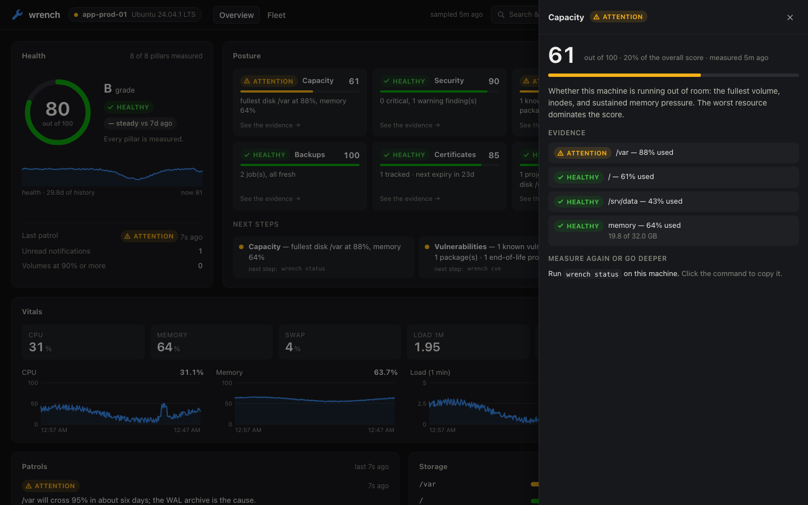
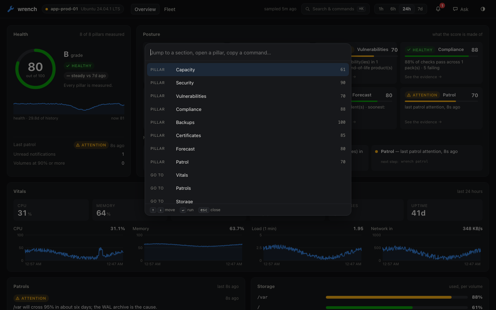
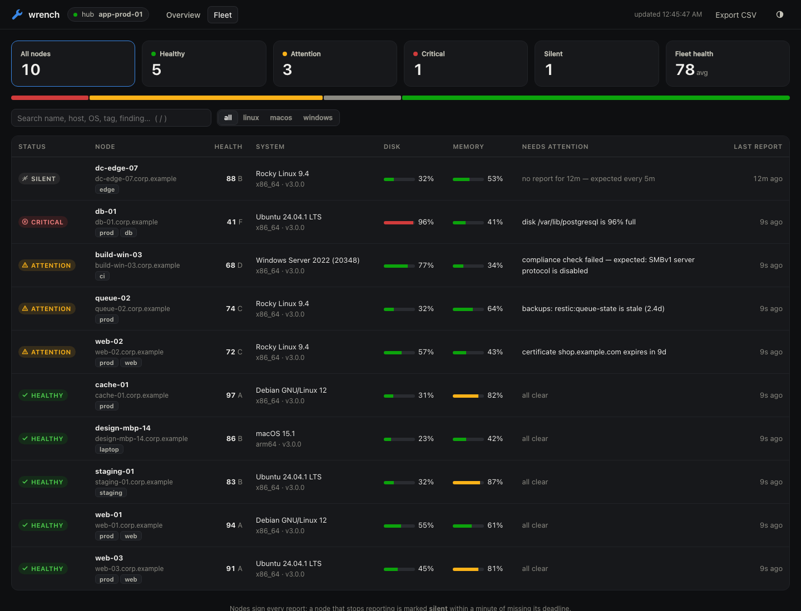

Version 3 · open source · MIT
A sysadmin for every
machine you run.
wrench lives on the machine. It watches, remembers what changed, scores its health, checks that backups and hardening are real — and fixes what you allow. One line per machine joins a fleet.

The problem
Nobody is watching the machine.
Disks fill over months. A port opens that nobody remembers opening. The backup job has been failing quietly since March. None of it pages anyone — until the day it does.
Degradation is silent
Classic tools show you right now and remember nothing. wrench keeps a time series, learns what normal is, and projects when each disk crosses its limit.
Changes leave no story
When something breaks you do archaeology. wrench snapshots ports, services, packages, users and scheduled jobs, and keeps the diff in plain English.
Graphs cannot investigate
A dashboard can show a line going up. wrench opens the journal, measures the directories, and tells you which process, since when, and what to do.
Health score
One number.
With its reasons.
"How is this machine, really?" should not mean reading eight reports. wrench score folds
everything wrench measures into a 0–100 score across eight pillars.
- Deterministic. Arithmetic over real measurements. The model is never asked how healthy the box is.
- Unknown is not healthy. A pillar with no data is shown as unmeasured and left out. Too little measured, and there is no grade at all.
- Nothing hides in an average. One critical pillar caps the total.
- Every pillar opens. Click one to see the volumes, findings, failing rules or jobs behind it — and the command to run next.


What it does
See. Predict. Prove. Fix. Scale.
Every command falls into one of five arcs. Pick one.
Watch the machine, right now
Read-only. None of these can change anything.
wrench patrolSensors, drift, security, backups, compliance and forecast in one pass — then a report with evidence and exact next commands.wrench ask "why is the disk filling up?"An agent on the model you chose investigates with allowlisted diagnostics and cites what it found.wrench driftWhat changed since last time: ports, services, packages, users, scheduled jobs.wrench securitySign-in anomalies, sudoers and authorized_keys drift, new or ownerless listeners.$ wrench ask "which disk fills first, and what's the hog?" ⚙ run_diag {"command": "df -h"} ⚙ disk_tree {"path": "/var", "depth": 1} ⚙ read_logs {"unit": "postgresql", "lines": 50} /var fills first: 88% used, growing ~0.7%/day → crosses 95% in about six days. The hog is /var/lib/postgresql/wal_archive (41 GB). The archive command has been failing since the 3rd — WAL segments are piling up, not shipping. To confirm (run as a human — I am in suggest tier): sudo -u postgres psql -c "select * from pg_stat_archiver" qwen2.5:14b · 9.7k tokens · 3 diagnostics run
See the incident coming
Trend math is code. The model is never asked when your disk fills.
wrench forecastLeast-squares trends over the machine's own history: disks, inodes, log growth — with confidence, and no paging on a weak trend.wrench certsEvery TLS certificate in nginx, apache, caddy, haproxy and the well-known stores, on an expiry ladder.wrench cveInstalled packages against OSV.dev, scored with the real CVSS formula; OS and runtimes against endoflife.date.$ wrench forecast 🔮 future incidents what now growth/day crosses ETA confidence disk /var 88.4% +0.71% 95% ~6d high cert shop.ex… — — expiry 23d certain disk / 61.0% +0.02% 95% — high inode /var 31.0% flat 90% — high memory and swap are never forecast to page — they are elastic; a straight line through them is not a prediction.
Evidence, not vibes
Make the machine's history and its safety nets verifiable.
wrench backupsFinds the jobs the box really has — cron, systemd timers, Time Machine — and checks they ran and answer. No jobs is a finding.wrench complyHardening packs for Ubuntu, macOS and Windows. Deterministic checks, a score, and skipped is never counted as passing.wrench audit verifyA hash-chained log of every consent and change, with a sealed head that exposes truncation.wrench bundleThe whole state of the box in one tar.gz for sneakernet review. No secrets.$ wrench comply 📋 macOS endpoint baseline — score 84.6% ✔ pass critical FileVault full-disk encryption is on ✔ pass critical System Integrity Protection is enabled ✔ pass high Gatekeeper is enabled ✖ fail high application firewall is on ✔ pass high security responses install automatically ✔ pass medium screen locks within 5 minutes ✖ fail low firewall stealth mode is on $ wrench audit verify ✔ INTACT — 212 event(s), every link verified.
With your permission
The model explains and recommends. It never writes the shell.
wrench fixxerFinds what is correctable — pending updates, bloated caches, fat logs, failed services — from a hand-written catalog. You pick; each fix is verified by re-measuring.wrench blueprint "harden sshd"The model drafts a diff against your real files. Code validates it with the daemon's own checker, backs up, applies, and rolls back on any failure.wrench certs renewDry-run first, new chain validated, config tested before reload.$ wrench fixxer 🔧 correctable issues I found # risk fix evidence 1 safe Clear Homebrew caches download cache holds 9887 MB 2 safe Shrink journald logs journald uses 4096 MB 3 moderate Apply pending updates 14 outdated (3 security) apply which? [a]ll / [n]one / numbers ▸ 1,2 ✓ Clear Homebrew caches verified: cache now 212 MB ✓ Shrink journald logs verified: journal now 439 MB both sealed into the audit chain · maintenance window: none set
Many machines, your stack
Run it everywhere, and plug it into what you already operate.
wrench fleet enroll → wrench fleet joinOne command on the hub, one line on each machine. Signed reports, replay protection, revocable keys.wrench webThe dashboard and fleet console. Sign-in, roles and TLS the moment you bind beyond localhost.--json · /metrics · syslogStable JSON on every command, a Prometheus exporter, RFC 5424 and JSON-lines sinks for your SIEM.offline = trueA declared zero-egress mode for networks that have never seen the internet.$ wrench score --json | jq '.score, .top_issues[0].command' 80.1 "wrench status" $ wrench patrol --no-llm --json || echo "needs attention" {"status":"attention","deterministic":true,"tokens":0,…} needs attention $ curl -s localhost:8787/metrics | grep health wrench_health_score 80.1 wrench_health_pillar_score{pillar="capacity"} 60.9 wrench_health_pillar_score{pillar="backups"} 100 wrench_fleet_nodes_silent 1
Brains optional
It does its job with no model at all.
Everything that can page you is deterministic code. So a server with no model configured still patrols, scores itself, verifies backups and certificates, audits hardening, and reports to the fleet hub. The patrol is simply marked deterministic.
Add a model and you get investigation, plain-English narrative and chat. Your choice of which:
- Fully local — Ollama or LM Studio. A guided setup picks a model that fits your hardware. Nothing leaves the box.
- Any API — OpenAI, Anthropic, Meta, Azure OpenAI / AI Foundry, a LiteLLM proxy.
- Your own endpoint — vLLM, llama.cpp, TGI, anything that speaks the OpenAI API.
$ wrench patrol I'm on patrol — sweeping sensors, drift, and logs (deterministic mode, tier: suggest)... ▲ ATTENTION backups: Time Machine is stale [warning] backups: timemachine:Vault — stale, last attempt did not complete (insufficient battery power) [warning] compliance check failed — expected: application firewall is on [warning] end of life: nodejs 20 [info] drift [ports]: port opened: tcp/8081 model deterministic · 0 tokens · 2.6s every finding above comes from code
Fleet
One line per machine.
Any wrench install can be a hub. Enrollment is a command, not a config file you paste into two places.

wrench fleet enroll --label "web tier" wrench fleet serve --host 0.0.0.0 --tls-cert … --tls-key …
wrench fleet join https://hub.example:8788 wfl_9bbe…0d7b --tags prod,web wrench install-service
What a report can and cannot do
- Signed — HMAC-SHA256 over a timestamp and the body. The hub stores only a derived key, never the token.
- Not replayable — a captured report cannot be resent to keep a dead machine looking alive.
- Bound — a node id belongs to the key that registered it. Another key cannot overwrite it.
- Revocable —
wrench fleet revokecuts a key off at the next report. - Silence is loud — the hub checks every 30 seconds; a machine that misses its deadline raises a critical alert.
Security model
An agent on a leash you hold.
Something that can touch your systems has to earn it. wrench's whole permission model is one line of config, and the defaults are the cautious ones.
observeLook. Never touch, never even suggest commands.suggestDiagnose and propose exact fixes. Never executes.repairAllowlisted fixes only, each confirmed by you.autonomousAllowlisted chores unattended. Explicit opt-in, fully logged.| Surface | What stands in the way |
|---|---|
| The model | Never authors a command. Diagnostics and repairs are matched whole against allowlists that spell out every flag; fixes come from a hand-written catalog. Tool output is treated as untrusted data. |
| Repairs | Service lifecycle only. Shutdown and rescue units are never targets; remote access, logging and security agents can be restarted but not stopped. Your maintenance windows apply — and a window that fails to parse blocks changes rather than allowing them. |
| Config changes | Paths confined by real path, a case-insensitive denylist, and no files that root executes. Validated by the daemon's own checker, backed up, rolled back on any failure or interrupt. |
| Dashboard | Loopback answers only to loopback host names. Any wider bind needs a token on every route — admin and read-only roles, same-origin checks, rate-limited sign-in, optional TLS. |
| Audit log | Hash-chained, appended under a lock, with a sealed head that exposes truncation, and an optional MAC keyed outside the data directory. |
| Data at rest | Owner-only data directory, database, config and tokens. API keys and fleet tokens never reach the database or the logs. |
What it does not defend against is written down too — SECURITY.md.
Try it
The 60-second tour
A simulated terminal with real, sanitized output. Click a step — nothing runs on your machine.
Case study
The night it earned its keep.
Attention — the dying disk whose alarm was also broken
A real patrol from wrench's first day on its development box.
- highsmartd had been reporting "7 currently unreadable (pending) sectors" every 30 minutes, all day — 2.8 TB of data at risk.
- medium92% memory traced to one 48 GB image-generation process. Context, not panic.
- mediumRepeated PCIe AER errors from one root port, six times that day.
- lowAnd the kicker: smartd's email alerts were broken (
/usr/bin/mailmissing). Every disk warning had been shouted into the void.
The machine had been asking for help every thirty minutes with the alarm wire cut. A metrics dashboard shows a line. A patrol says: the disk is dying, the alarm was broken, and here is what to do about it.
Every machine
From one laptop to the whole estate.
Linux tested live
systemd, journald, apt/dnf/pacman, cron and timers, a CIS-inspired Ubuntu pack. The original platform, exercised end to end.
macOS tested live
Real APFS capacity, an unprivileged listener census, Time Machine verification, launchd, and a pack for FileVault, SIP, Gatekeeper and the firewall.
Windows in CI, not yet hands-on
Services, Event Log, Task Scheduler, and a pack for Defender, BitLocker, UAC, SMBv1 and RDP. Unit-tested and run in CI — no native pass yet, and we say so.
A personal machine
wrench patrol, then wrench web. A welcome guide walks the five commands that take a box from unwatched to watched.
A server
wrench install-service schedules patrols. No model needed. Alerts go to desktop, webhook, syslog or your SIEM.
A classified or shipboard box
offline = true refuses every public call; wrench bundle carries the evidence out on a USB stick.
The honest capability matrix lives in PLATFORMS.md.
Install
Two minutes to a watched machine.
curl -fsSL https://raw.githubusercontent.com/sunkencity999/wrench/main/scripts/install.sh | bash # or: pipx install git+https://github.com/sunkencity999/wrench wrench patrol # the first measurements — no model needed wrench score # one number, with its reasons wrench install-service # systemd timer: patrol every 15 minutes wrench web # dashboard at http://127.0.0.1:8787
# needs Python 3.10+ (brew install python) curl -fsSL https://raw.githubusercontent.com/sunkencity999/wrench/main/scripts/install.sh | bash wrench patrol # the first measurements — no model needed wrench score # one number, with its reasons wrench install-service # launchd agent: patrol every 15 minutes wrench web # dashboard at http://127.0.0.1:8787
# PowerShell — needs Python 3.10+ on PATH irm https://raw.githubusercontent.com/sunkencity999/wrench/main/scripts/install.ps1 | iex wrench patrol # the first measurements — no model needed wrench score # one number, with its reasons wrench install-service # Scheduled Task: patrol every 15 minutes wrench web # dashboard at http://127.0.0.1:8787
Want a brain? wrench init opens a provider menu — local first — and proves the setup with a live smoke test.
Questions
Fair things to ask.
Will it run commands on my server without asking?
No. It starts in suggest, where it cannot change anything. Above that, every action must match an allowlist, and repair confirms each one with you. The only unattended path is one you opt into deliberately, and it is logged.
Do I need an LLM?
No. Patrols, the health score, drift, security, backups, compliance, forecasting, alerts and fleet reporting are all code. A model adds investigation, narrative and chat.
Does my data leave the machine?
Telemetry lives in a local SQLite file. If you choose a cloud model, the context for a question is sent to that provider. Use a local model, or set offline = true, and nothing leaves.
Isn't this Prometheus and Grafana?
Those are excellent for metrics, and wrench feeds them. wrench answers different questions: what changed, are the backups real, is the box hardened, when does it fill up, which machine went quiet — and then it goes and finds out why.
How does it scale to hundreds of machines?
Each machine does its own work and pushes a 2 KB signed summary after each patrol. The hub is one process and one SQLite file, with search, filters, per-machine history, CSV export and Prometheus gauges.
What is not done yet?
Windows has not had a native hands-on pass. Sign-in log watching exists only on Linux. Both are stated in the docs rather than implied away.